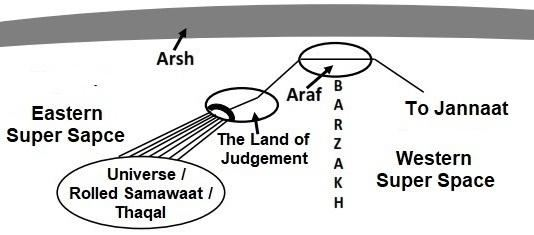

Part-2, Hudan lil Nas [Guidance for Mankind] Chapter 25 [Al-Furqan / The Criterion] Highlight: Allah is responsible for the Furqan (War Book). Prophet Muhammad should not be blamed of the wars.
পার্ট-২, হুদান লিল নাস [মানবজাতির জন্য নির্দেশনা] 25 অধ্যায় [আল-ফুরকান / মাপদণ্ড] হাইলাইট: আল্লাহ ফুরকানের (যুদ্ধ বই) জন্য দায়ী। যুদ্ধের জন্য নবী মুহাম্মদকে দোষারোপ করা উচিত নয়।
The Chapter reasons out the need of Al Furqan (the War Book / from Chapter-3 to Chapter-9) and asks mankind not to blame Prophet Muhammad (pbuh) for adopting the Path of Warfare for preaching Islam in the Home of Ummah (Darussalam / Home of Peace) extending from Morocco to the Pamirs. The Furqan is revealed by the God who knows the mystery in the Skies and Lands; He is Oft-Forgiving, Most Merciful. The Surah calls people of the whole world to accept Prophet Muhammad (pbuh) and discusses reward and punishment.
অধ্যায়টি আল ফুরকান (যুদ্ধের বই / অধ্যায়-3 থেকে অধ্যায়-9) এর প্রয়োজনীয়তার কারণ দেখিয়েছে এবং মরক্কো থেকে পামিরস পর্যন্ত বিস্তৃত উম্মাহ (দারুসসালাম/শান্তির বাড়ি) বাড়িতে ইসলাম প্রচারের জন্য যুদ্ধের পথ অবলম্বন করার জন্য নবী মুহাম্মদ (সাঃ) কে দোষারোপ না করার জন্য মানবজাতিকে অনুরোধ করেছে। ফুরকান সেই ঈশ্বরের দ্বারা প্রকাশিত হয় যিনি আকাশ ও জমিনের রহস্য জানেন; তিনি পরম ক্ষমাশীল, পরম দয়ালু। সূরাটি সমগ্র বিশ্বের মানুষকে হযরত মুহাম্মদ (সঃ)-কে গ্রহণ করার আহ্বান জানায় এবং পুরস্কার ও শাস্তির বিষয়ে আলোচনা করে।
Blessed is He who sent down the Furqan (War Book / from Chapter-3 to Chapter-9) to His servant that it (the Quran) may be an admonition to all creatures, He, to whom belongs the dominion of the Skies and the Lands; no son has He begotten, nor has He a partner in His dominion. It is He who created all things and ordered them in due proportions, yet have they taken besides Him gods that can create nothing but are themselves created; that have no control of hurt or good to themselves; nor can they control death, nor life, nor resurrection. And the misbelievers say: "Naught is this but a lie, which he has forged, and others have helped him at it." In truth, it is they who have put forward an iniquity and a falsehood. And they say: "Tales of the ancients, which he has caused to be written, and they are dictated before him morning and evening." Say: "The (the Quran) was sent down by Him who knows the mystery in the Skies and Lands; verily He is Oft- Forgiving, Most Merciful."
বরকতময় তিনি যিনি তাঁর বান্দার প্রতি ফুরকান (যুদ্ধ বই / অধ্যায়-3 থেকে অধ্যায়-9) অবতীর্ণ করেছেন যাতে এটি (কুরআন) সমস্ত প্রাণীর জন্য উপদেশ হতে পারে, তিনি, যাঁর আকাশ ও জমিনের রাজত্ব; তাঁর কোন পুত্র সন্তান নেই এবং তাঁর রাজত্বে তাঁর কোন অংশীদার নেই। তিনিই সব কিছু সৃষ্টি করেছেন এবং সেগুলোকে যথাযথ অনুপাতে দিয়েছেন, তারপরও তারা তাঁকে বাদ দিয়ে এমন উপাস্য গ্রহণ করেছে যারা কিছুই সৃষ্টি করতে পারে না, কিন্তু তারা নিজেরাই সৃষ্ট। যাদের নিজেদের ক্ষতি বা ভালো করার কোন নিয়ন্ত্রণ নেই; তারা মৃত্যু, জীবন বা পুনরুত্থান নিয়ন্ত্রণ করতে পারে না। আর কাফেররা বলে, এটা মিথ্যা ছাড়া আর কিছুই নয়, যা সে বানিয়েছে এবং অন্যরা এতে তাকে সাহায্য করেছে। প্রকৃতপক্ষে, তারাই একটি অন্যায় ও মিথ্যাকে সামনে রেখেছিল। এবং তারা বলে: "প্রাচীনকালের গল্প, যা তিনি রচনা করেছেন, এবং সেগুলি সকাল-সন্ধ্যা তাঁর সামনে বর্ণনা করা হয়।" বলুন, "(কুরআন) তাঁর পক্ষ থেকে অবতীর্ণ হয়েছে, যিনি আকাশ ও জমিনের রহস্য জানেন; নিশ্চয় তিনি ক্ষমাশীল, পরম দয়ালু।"
The Surah describes the need for giving the Furqan (War Book). However, the Surah itself is not part of the Furqan. The Furqan begins at Chapter 3 and ends at Chapter 9. The Surah is called Furqan because the word 'Furqan' is found in it. The verses of the Quran did not come to Prophet (pbuh) with the titles (names of the Surahs) attached to them. The titles were not given by Prophet (pbuh) either. The titles appeared over time as people began calling a Surah by a name, usually a key word from the Surah. The Furqan begins at Chapter-3 and ends at Chapter- 9. The part is called a Book; it is a Book within the Quran. It inspires and directs its followers to establish Islam through struggle and warfare, which is not viewed positively by many.
সূরাটি ফুরকান (যুদ্ধ বই) দেওয়ার প্রয়োজনীয়তা বর্ণনা করে। তবে সূরাটি নিজেই ফুরকানের অংশ নয়। ফুরকান অধ্যায় 3 থেকে শুরু হয় এবং অধ্যায় 9 এ শেষ হয়। সূরাটিকে ফুরকান বলা হয় কারণ এতে 'ফুরকান' শব্দটি পাওয়া যায়। কুরআনের আয়াতগুলি তাদের সাথে সংযুক্ত শিরোনাম (সূরাগুলির নাম) সহ নবী (সাঃ) এর কাছে আসেনি। উপাধিগুলো নবী (সাঃ)ও দেননি। সময়ের সাথে সাথে শিরোনামগুলি উপস্থিত হয়েছিল যখন লোকেরা একটি সূরাকে একটি নামে ডাকতে শুরু করেছিল, সাধারণত সূরার একটি মূল শব্দ। ফুরকান অধ্যায়-৩ থেকে শুরু হয় এবং অধ্যায়-৯ এ শেষ হয়। অংশটিকে বই বলা হয়; এটি কুরআনের মধ্যে একটি কিতাব। এটি তার অনুসারীদেরকে সংগ্রাম ও যুদ্ধের মাধ্যমে ইসলাম প্রতিষ্ঠার জন্য অনুপ্রাণিত করে এবং নির্দেশ দেয়, যা অনেকেই ইতিবাচকভাবে দেখে না।
―From (here / Chapter-3) towards the ―Guidance for the Mankind‖ (that starts at Chapter-10) sent down the Furqan (War Book) as well…‖ [Al Quran 3:4]
- (এখান থেকে / অধ্যায়-3) "মানবজাতির জন্য পথনির্দেশ" (যা অধ্যায়-10 থেকে শুরু হয়) এর দিকেও ফুরকান (যুদ্ধ বই) নাযিল করেছে..." [আল কুরআন 3:4]
Many of the People of the Book cannot digest that a Book calling for war can be from the Merciful God. Some may think of Muhammad (pbuh) as an Arab nationalistic leader who drove people into war against the ruling Roman and Persian Empires with fabricated verses. However, the above verses clarify that Allah revealed the Book; Muhammad (pbuh) did not falsely create it. The Furqan vanquishes evil through struggle and warfare. It is primarily aimed at establishing Islam in the Home of Ummah (Darussalam / Home of Peace), extending from Morocco to the Pamirs. After the Battle of Badr, in 2 AH, it was revealed that the Furqan would be given to the Muslims: ―O you who believe, if you fear Allah, He will grant you a Furqan, remove from you evil you, and forgive you; for Allah is the Lord of grace unbounded.‖ [Al Quran 8:29]
অনেক আহলে কিতাব হজম করতে পারে না যে যুদ্ধের আহ্বানকারী কিতাব দয়াময় আল্লাহর পক্ষ থেকে হতে পারে। কেউ কেউ মুহাম্মদ (সাঃ) কে একজন আরব জাতীয়তাবাদী নেতা হিসেবে মনে করতে পারেন যিনি মানুষকে বানোয়াট আয়াত দিয়ে শাসক রোমান ও পারস্য সাম্রাজ্যের বিরুদ্ধে যুদ্ধে ঠেলে দিয়েছিলেন। যাইহোক, উপরের আয়াতগুলো স্পষ্ট করে যে, আল্লাহ কিতাব নাজিল করেছেন; মুহাম্মাদ (সাঃ) মিথ্যাভাবে এটি তৈরি করেননি। ফুরকান সংগ্রাম ও যুদ্ধের মাধ্যমে মন্দকে পরাজিত করে। এটি প্রাথমিকভাবে মরক্কো থেকে পামির পর্যন্ত বিস্তৃত উম্মাহ (দারুসসালাম / শান্তির বাড়ি) ইসলাম প্রতিষ্ঠার লক্ষ্যে। বদর যুদ্ধের পর, 2 হিজরিতে, মুসলমানদেরকে ফুরকান দেওয়া হবে বলে নাজিল হয়: “হে ঈমানদারগণ, যদি তোমরা আল্লাহকে ভয় কর, তবে তিনি তোমাদেরকে ফুরকান দেবেন, তোমাদের মন্দ দূর করবেন এবং তোমাদের ক্ষমা করবেন; কারণ আল্লাহ সীমাহীন অনুগ্রহের মালিক।'' [আল কুরআন 8:29]
The Furqan was revealed step by step, and the Muslims were prepared for the main war. In 8 AH, the revelation of the Furqan was completed with Chapter-9, which declared an all-out offensive against the Pagans (idol worshippers):
ধাপে ধাপে ফুরকান অবতীর্ণ হয় এবং মুসলমানরা মূল যুদ্ধের জন্য প্রস্তুত হয়। 8 হিজরিতে, ফুরকানের নাযিল করা হয়েছিল অধ্যায়-9 দিয়ে, যা পৌত্তলিকদের (মূর্তিপূজারীদের) বিরুদ্ধে সর্বাত্মক আক্রমণ ঘোষণা করেছিল:
―But when the forbidden months are past, then fight and slay the Pagans wherever you find them, and seize them, beleaguer them, and lie in wait for them in every place of ambush; but if they repent and establish salat and pay zakat, then open the way for them; for God is Oft-forgiving, Most Merciful.‖ [Al Quran (Surah Tawbah) 9:5]
কিন্তু যখন নিষিদ্ধ মাস শেষ হয়ে যাবে, তখন পৌত্তলিকদের যেখানেই পাও সেখানেই তাদের সাথে যুদ্ধ কর এবং হত্যা কর এবং তাদের পাকড়াও কর, তাদের অবরুদ্ধ কর, এবং অতর্কিত অবস্থানের প্রতিটি স্থানে তাদের জন্য অপেক্ষা কর; অতঃপর যদি তারা তওবা করে, ছালাত কায়েম করে এবং যাকাত দেয়, তাহলে তাদের জন্য পথ খুলে দাও। কারণ আল্লাহ ক্ষমাশীল, পরম করুণাময়।'' [আল কুরআন (সূরা তওবা) 9:5]
It gave the Rules of Engagement as well:
এটি বাগদানের নিয়মও দিয়েছে:
―If one amongst the Pagans asks thee for asylum, grant it to him so that he may hear the word of God, and then escort him to where he can be secure. That is because they are men without knowledge.‖ [Al Quran (Surah Tawbah) 9:6]
- যদি পৌত্তলিকদের মধ্যে কেউ আপনার কাছে আশ্রয় প্রার্থনা করে তবে তাকে তা মঞ্জুর করুন যাতে সে ঈশ্বরের বাণী শুনতে পারে এবং তারপর তাকে নিরাপদে নিয়ে যেতে পারে। কারণ তারা জ্ঞানহীন মানুষ।'' [আল কুরআন (সূরা তাওবা) 9:6]
―Fight those who believe not in God, nor the Last Day, nor hold that forbidden which have been forbidden by God and His Apostle, nor acknowledge the religion of Truth (The rule regarding idolaters ends here); of the People of the Book, until they pay the Jizya with willing submission, and feel themselves subdued.‖ [Al Quran (Surah Tawbah) 9:29]
যারা আল্লাহ ও শেষ দিবসে বিশ্বাস করে না, আল্লাহ ও তাঁর রসূল কর্তৃক হারাম করা হারামকে ধারণ করে না এবং সত্যের ধর্মকে স্বীকার করে না (মুশরিকদের নিয়ম এখানেই শেষ হয়); আহলে কিতাবদের মধ্যে, যতক্ষণ না তারা স্বেচ্ছায় আনুগত্যের সাথে জিজিয়া প্রদান করে এবং নিজেদেরকে পরাধীন মনে করে।" [আল কুরআন (সূরা তওবা) 9:29]
In parts of Darussalam (the Home of Ummah), the pagans were under the protection of the Roman Byzantine Empire. Therefore, the People of the Book were to be subdued and brought under a system of collecting Jizya. This meant defeating the Byzantine Empire and compelling Christians to pay Jizya so that they would not interfere when Islam was preached among the pagans (idolaters). People of the Book could be fought only in this scenario, or if they attacked first. The Sahabah continued until the final objectives were achieved. [The verses have been deliberately discussed in Chapter-9] From Chapter 10, the 'Guidance for Mankind' begins and continues up to Chapter 30. Therefore, this chapter (Chapter 25) has nothing to do with the Furqan, except to state that Allah is the Creator and Designer of everything. Everything belongs to Him, so He has the right to give the Furqan (guidance and authority to fight): ―Blessed is He who sent down the Furqan (War Book) to His servant that it (the Quran) may be an admonition to all creatures, He, to whom belongs the dominion of the Skies and the Lands; no son has he begotten, nor has He a partner in His dominion.‖ Allah knows the mysteries of the Universe: ―Say: "The (Furqan) was sent down by Him who knows the mystery in the Skies and Lands; verily He is Oft- Forgiving, Most Merciful.‖ He knows what is good for humans, and what is bad? So, Prophet (pbuh) should not be blamed, saying that he preached Islam by the sword. The Guidance is given by Allah; he just followed.
দারুসসালামের কিছু অংশে (উম্মাহর বাড়ি), পৌত্তলিকরা রোমান বাইজেন্টাইন সাম্রাজ্যের সুরক্ষায় ছিল। তাই আহলে কিতাবদেরকে দমন করে জিজিয়া আদায়ের ব্যবস্থার আওতায় আনার কথা ছিল। এর অর্থ ছিল বাইজেন্টাইন সাম্রাজ্যকে পরাজিত করা এবং খ্রিস্টানদের জিজিয়া দিতে বাধ্য করা যাতে তারা পৌত্তলিকদের (মূর্তিপূজকদের) মধ্যে ইসলাম প্রচারের সময় হস্তক্ষেপ না করে। আহলে কিতাবদের সাথে শুধুমাত্র এই পরিস্থিতিতে যুদ্ধ করা যেতে পারে, অথবা যদি তারা প্রথমে আক্রমণ করে। চূড়ান্ত উদ্দেশ্য অর্জিত না হওয়া পর্যন্ত সাহাবাগণ চলতে থাকেন। [অধ্যায়-9 এ আয়াতগুলো ইচ্ছাকৃতভাবে আলোচনা করা হয়েছে] 10 অধ্যায় থেকে 'মানবজাতির জন্য নির্দেশনা' শুরু হয় এবং 30তম অধ্যায় পর্যন্ত চলতে থাকে। অতএব, এই অধ্যায়ের (অধ্যায় 25) সাথে ফুরকানের কোনো সম্পর্ক নেই, শুধুমাত্র আল্লাহই সবকিছুর স্রষ্টা এবং ডিজাইনার। সবকিছুই তাঁর, তাই ফুরকান (যুদ্ধের নির্দেশনা ও কর্তৃত্ব) দেওয়ার অধিকার তাঁরই রয়েছে: “ধন্য তিনি যিনি তাঁর বান্দার প্রতি ফুরকান (যুদ্ধ গ্রন্থ) নাযিল করেছেন যাতে এটি (কুরআন) সমস্ত প্রাণীর জন্য উপদেশ হতে পারে, তিনি, যাঁর আকাশ ও ভূমির রাজত্ব; তিনি কোন পুত্র সন্তান গ্রহন করেননি এবং তার রাজত্বে তার কোন অংশীদারও নেই।’’ আল্লাহ মহাবিশ্বের রহস্য জানেন: ‘‘বলুন: ‘‘(ফুরকান) তাঁর দ্বারা অবতীর্ণ হয়েছে যিনি আকাশ ও ভূমির রহস্য জানেন; নিশ্চয় তিনি ক্ষমাশীল, পরম করুণাময়।’’ তিনি জানেন, মানুষের জন্য কী ভাল এবং কী করা উচিত নয়? তাকে দোষারোপ করা হয় যে, তিনি তরবারির মাধ্যমে ইসলাম প্রচার করেছেন।
And they say: "What sort of an apostle is this who eats food and walks through the streets? Why has not an angel been sent down to him to give admonition with him, or has not a treasure been bestowed on him, or why has he (not) a garden for enjoyment?" The wicked say: "You follow none other than a man bewitched." See what kinds of comparisons they make for thee! But they have gone astray, and never a way will they be able to find! Blessed is He Who, if that were His will, could give thee better than those—Jannaatin (Paradise), beneath which flow rivers, and He could give thee palaces. Nay they deny the Hour (of Judgment). But We have prepared a blazing fire for such as deny the Hour. When it sees them from a place far off, they will hear its fury and its ranging sigh.
এবং তারা বলে: "এটি কেমন রসূল যে খাবার খায় এবং রাস্তায় চলাফেরা করে? কেন তার কাছে উপদেশ দেওয়ার জন্য কোন ফেরেশতা নাযিল করা হয় নি, বা তার জন্য কোন ধন-ভান্ডার দেওয়া হয়নি, বা কেন তার (না) উপভোগের জন্য একটি বাগান রয়েছে?" দুষ্টরা বলে: "তোমরা যাদুগ্রস্ত ব্যক্তি ছাড়া আর কাউকে অনুসরণ কর না।" দেখুন তারা আপনার জন্য কি ধরনের তুলনা করে! কিন্তু তারা পথভ্রষ্ট হয়েছে, আর কোন পথ তারা খুঁজে পাবে না! বরকতময় তিনি যিনি, যদি তাঁর ইচ্ছা হয়, তবে আপনাকে তাদের চেয়ে উত্তম দিতে পারতেন-জান্নাতিন (জান্নাত), যার তলদেশে নদী প্রবাহিত এবং তিনি আপনাকে প্রাসাদ দিতে পারেন। বরং তারা কেয়ামতকে অস্বীকার করে। কিন্তু যারা কেয়ামতকে অস্বীকার করে তাদের জন্য আমি প্রজ্জ্বলিত আগুন প্রস্তুত করে রেখেছি। যখন এটি তাদের দূরবর্তী স্থান থেকে দেখবে, তখন তারা এর ক্রোধ এবং দীর্ঘশ্বাস শুনতে পাবে।
Humans assembled on the Land of Judgment will see the blazing fire in the Rolled-up Samawaat (Thaqal / Heavy Mass), which harbors the objects of hell. Thus, they will see the fire of hell from a far-off place.
বিচারের ভূমিতে সমবেত মানুষরা রোলড-আপ সামওয়াতে (থাকাল/ভারী ভর) জ্বলন্ত আগুন দেখতে পাবে, যা জাহান্নামের বস্তুগুলিকে আশ্রয় করে। এভাবে তারা দূর থেকে জাহান্নামের আগুন দেখতে পাবে।
FIGURE 25.1: Universe / Rolled Samawaat / Thaqal harboring the nascent objects (galaxies) of hell

চিত্র 25_1 / Figure 25_1
চিত্র 25.1: মহাবিশ্ব / ঘূর্ণিত সামওয়াত / থাকাল নরকের নবজাত বস্তু (গ্যালাক্সি) আশ্রয় করে
চিত্র 25_1 / Figure 25_1
And when they are cast bound together into a constricted place therein, they will plead for destruction there and then! This day plead not for a single destruction—plead for destruction oft-repeated!
এবং যখন তারা সেখানে একটি সংকীর্ণ জায়গায় একত্রে আবদ্ধ হবে, তখন তারা সেখানে ধ্বংসের জন্য অনুরোধ করবে! এই দিনটি একটি ধ্বংসের জন্য নয় - বারবার ধ্বংসের জন্য অনুরোধ!
At the time of Judgment, the collapsed universe (Rolled- Samawaat) will be extremely squeezed. The sinners will be pushed into the galaxies. After the Judgment, the Samawaat will unroll, releasing the extremely compressed galaxies. The unrolled universe at that time is referred to as the 'constricted place' in the verses. Eventually, the collapsed universe will expand adequately, and each sinner will find himself in a galaxy to live forever as a Forgotten Vicegerent of God. Say: "Is that best—or the eternal Jannaat, promised to the guards? For them that is a reward as well as a goal; for them there will be therein all that they wish for; they will dwell for aye—a promise—to be prayed for from thy Lord." The day He will gather them together as well as those whom they worship besides God, He will ask: "Was it you who let these, My servants, astray, or did they stray from the Path themselves?" They will say: "Glory to Thee! Not meet was it for us that we should take besides Thee any protectors. But Thou did bestow on them and their fathers good things until they forgot the Message; for they were a people lost." Now have they proved you liars in what you say, so you cannot avert, nor (can) help. And whoever among you does wrong, him shall We cause to taste of a grievous Penalty. And the apostles whom We sent before thee were all who ate food and walked through the streets. We have made some of you as a trial for others; will you have patience; for God is One Who sees. Such as fear not the meeting with Us, say: "Why are not the angels sent down to us, or (why) do we not see our Lord?" Indeed, they have an arrogant conceit of themselves, and mighty is the insolence of their impiety! The Day they see the angels, no joy will there be to the sinners that Day. The (angels) will say: "There is a barrier forbidden altogether!" And We shall turn to whatever deeds they did, and We shall make such deeds as floating dust scattered about. Remarks:
বিচারের সময়, ভেঙে পড়া মহাবিশ্ব (ঘূর্ণিত-সামাওয়াত) অত্যন্ত চাপা পড়ে যাবে। পাপীদের গ্যালাক্সিতে ঠেলে দেওয়া হবে। বিচারের পরে, সামওয়াত আনরোল হবে, অত্যন্ত সংকুচিত ছায়াপথগুলিকে ছেড়ে দেবে। তৎকালীন অনালোচিত মহাবিশ্বকে আয়াতগুলিতে 'সংকীর্ণ স্থান' হিসাবে উল্লেখ করা হয়েছে। অবশেষে, ধসে পড়া মহাবিশ্ব পর্যাপ্তভাবে প্রসারিত হবে, এবং প্রতিটি পাপী ঈশ্বরের ভুলে যাওয়া ভাইসজারেন্ট হিসাবে চিরকাল বেঁচে থাকার জন্য একটি গ্যালাক্সিতে নিজেকে খুঁজে পাবে। বলুন: "এটি কি সর্বোত্তম—নাকি চিরস্থায়ী জান্নাত, রক্ষীদের কাছে প্রতিশ্রুত? তাদের জন্য এটি একটি পুরস্কারের পাশাপাশি একটি লক্ষ্যও; তাদের জন্য সেখানে তারা যা চাইবে সবই থাকবে; তারা স্থায়ীভাবে বাস করবে - একটি প্রতিশ্রুতি - যা আপনার প্রভুর কাছে প্রার্থনা করা হবে।" যেদিন তিনি তাদেরকে এবং তারা আল্লাহকে বাদ দিয়ে যাদের উপাসনা করে তাদের একত্রিত করবেন, তখন তিনি জিজ্ঞাসা করবেন: "তোমরা কি আমার বান্দাদেরকে পথভ্রষ্ট করেছিলে, নাকি তারা নিজেরাই পথ থেকে বিচ্যুত করেছিল?" তারা বলবেঃ তোমার মহিমা! তোমার ব্যতীত অন্য কোন অভিভাবক গ্রহণ করা আমাদের জন্য উপযুক্ত ছিল না। কিন্তু তুমি তাদেরকে এবং তাদের পিতৃপুরুষদেরকে কল্যাণ দান করেছ যতক্ষণ না তারা বাণী ভুলে যায়; কারণ তারা ছিল ক্ষতিগ্রস্ত সম্প্রদায়। এখন তারা আপনার কথায় মিথ্যা প্রমাণিত করেছে, সুতরাং আপনি এড়াতে পারবেন না এবং সাহায্যও করতে পারবেন না। আর তোমাদের মধ্যে যে অন্যায় করবে, আমি তাকে যন্ত্রণাদায়ক শাস্তি আস্বাদন করাব। আর তোমার পূর্বে আমি যে সমস্ত রসূল প্রেরণ করেছি তারা সকলেই খাদ্য গ্রহণ করত এবং রাস্তায় চলাফেরা করত। আমরা তোমাদের কাউকে অন্যদের জন্য পরীক্ষা করেছি; তুমি কি ধৈর্য ধরবে; কারণ আল্লাহই দেখেন। যেমন আমাদের সাথে সাক্ষাতকে ভয় করো না, বলুন: "কেন ফেরেশতারা আমাদের কাছে নাযিল হয় না, বা (কেন) আমরা আমাদের প্রভুকে দেখতে পাই না?" প্রকৃতপক্ষে, তাদের নিজেদের মধ্যে একটি অহংকারী অহংকার আছে, এবং তাদের অসভ্যতার দাম্ভিকতা প্রবল! যেদিন তারা ফেরেশতাদের দেখবে, সেদিন পাপীদের কোন আনন্দ থাকবে না। (ফেরেশতারা) বলবেন: "সম্পূর্ণভাবে নিষিদ্ধ একটি বাধা আছে!" আর তারা যে কাজগুলো করেছে আমি তার দিকে ফিরে যাব এবং সেগুলোকে ধূলিকণার মতো করে দেব। মন্তব্য:
We will discuss the last lines of above verses: ―The (angels) will say: "There is a barrier forbidden altogether!" And We shall turn to whatever deeds they did, and We shall make such deeds as floating dust scattered about.‖ The sinners will attempt to move into the Western Super Space, which harbors the Jannaat, but an obstruction (Barzakh) will prevent any from crossing. Moreover, the angels will stop them from entering through the channel and will drive them back into the objects of hell (galaxies). A hell-dweller will be a Vicegerent of God over an entire galaxy. He will live forever. If anyone of the hell dwellers can make a space ship and try to move into the Araf for onward move to Jannaat, his ship will be turned to dust scattered about in the Samawaat, or in the Super Space.
আমরা উপরোক্ত আয়াতের শেষ লাইনগুলো আলোচনা করব: - (ফেরেশতারা) বলবেন: "একটি বাধা সম্পূর্ণরূপে নিষিদ্ধ!" এবং তারা যা করেছে আমরা তার দিকে ফিরে যাব এবং আমরা এমন কাজগুলিকে ছড়িয়ে দেব ভাসমান ধূলিকণার মতো।'' পাপীরা ওয়েস্টার্ন সুপার স্পেসে যাওয়ার চেষ্টা করবে, যা জান্নাতকে আশ্রয় করে, কিন্তু একটি বাধা (বারজাখ) কাউকে অতিক্রম করতে বাধা দেবে। তদুপরি, ফেরেশতারা তাদের চ্যানেলের মধ্য দিয়ে প্রবেশ করা থেকে বিরত রাখবে এবং তাদেরকে নরকের বস্তুগুলিতে (গ্যালাক্সি) ফিরিয়ে দেবে। একজন নরকবাসী গোটা গ্যালাক্সিতে ঈশ্বরের উপাচার্য হবেন। তিনি চিরকাল বেঁচে থাকবেন। জাহান্নামবাসীদের মধ্যে কেউ যদি একটি মহাকাশ জাহাজ তৈরি করে জান্নাতে যাওয়ার জন্য আরাফে যাওয়ার চেষ্টা করে, তবে তার জাহাজটি সামাওয়াতে বা সুপার স্পেসে ছড়িয়ে ছিটিয়ে থাকা ধুলোয় পরিণত হবে।